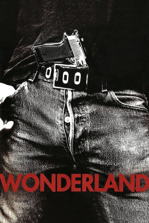

#1751 Wonderland
 
 IMDB-Wertung: 6.6 / 10
IMDB-Wertung: 6.6 / 10  Metascore: 43
Metascore: 43 
Im Jahr 1981 hat sich der ehemalige Pornostar John Holmes längst in ein kokainschnupfendes Drogenwrack verwandelt, daß sogar von seiner Frau Sharon verlassen wurde. Um mit seiner minderjährigen Freundin Dawn aus dem Sumpf herauszukommen, geht er auf die Idee einer Gruppe Kleindealern um Launius ein, den Crimeboss Nash auszunehmen. Holmes, der mit Nash befreundet ist, ist bereit zu helfen, doch kurze Zeit nach dem Überfall findet man in der Wonderland Avenue die furchtbar zugerichteten Leichen aller Beteiligten. Nur Launius Frau überlebt, doch sowohl sie, als auch Holmes und ein Freund von Launius erzählen unterschiedliche Geschichten über den Ablauf der Nacht und die Beteiligung einzelner Personen...
Jahr: 2003
Dauer: 104 Minuten
FSK: 16
Land: USA Studio: A Lions Gate Entertainment CompanyTonspuren: DD5.1 - ,
Untertitel:
Auflösung: 1080p (1920x1080) Größe: 8458 MB
Genre: Krimi, Drama, Mystery, Thriller
Regisseur: James Cox
Drehbuch: James Cox, Captain Mauzner, Todd Samovitz, D. Loriston Scott
Soundtrack: Cliff Martinez
Darsteller:
 Kate Bosworth als Dawn Schiller
Kate Bosworth als Dawn Schiller Carrie Fisher als Sally Hansen
Carrie Fisher als Sally Hansen Val Kilmer als John Holmes
Val Kilmer als John Holmes Dylan McDermott als David Lind
Dylan McDermott als David Lind Michael Pitt als Gopher , scenes deleted
Michael Pitt als Gopher , scenes deleted- Alexis Dziena als Gopher's Girlfriend , scenes deleted
 Josh Lucas als Ron Launius
Josh Lucas als Ron Launius Louis Lombardi als Slim Jim
Louis Lombardi als Slim Jim Franky G als Louis
Franky G als Louis Ted Levine als Sam Nico
Ted Levine als Sam Nico- Russell Sams als Cherokee
 Tim Blake Nelson als Billy Deverell
Tim Blake Nelson als Billy Deverell Janeane Garofalo als Joy Miller
Janeane Garofalo als Joy Miller- Natasha Gregson Wagner als Barbara Richardson
- David Solomini als Guy at Party
- Stephanie Roth Haberle als Biker Girl
 Scoot McNairy als Jack
Scoot McNairy als Jack Christina Applegate als Susan Launius
Christina Applegate als Susan Launius Faizon Love als Greg Diles
Faizon Love als Greg Diles Eric Bogosian als Eddie Nash
Eric Bogosian als Eddie Nash- Michelle Borth als Sonia
 Chris Ellis als Captain Nimziki
Chris Ellis als Captain Nimziki Lisa Kudrow als Sharon Holmes
Lisa Kudrow als Sharon Holmes M.C. Gainey als Billy Ward
M.C. Gainey als Billy Ward Joel Michaely als Bruce , scenes deleted
Joel Michaely als Bruce , scenes deleted Paris Hilton als Barbie
Paris Hilton als Barbie Carl Ciarfalio als Hit Man #1 , uncredited
Carl Ciarfalio als Hit Man #1 , uncredited- Scott Conley als Police Officer #2 , uncredited
 Frank Gallegos als Motel Manager , uncredited
Frank Gallegos als Motel Manager , uncredited- Robert Gallo als Flasher , uncredited
- Barrett Gregory als Security Guard , uncredited
- John Holmes als Johnny Wadd , archive footage, uncredited
- Max als Thor - Dawn's Chihuahua , uncredited
- Kim Marriner als Reporter
- Karen LaKritz als Bartender
- Steve Cox als Guy at Bar
- Chris Cioffi als Letterman Meathead
- Julianne Steiger als Janet
- Tess Parker als Chrissy
- George Leonardopoulos als Tommy Conway
- Joleigh Fioravanti als Alexa
- Jeff Bonilla als Police Officer #1 , uncredited
- Nick Danger als Himself , uncredited
- Louis E. Rosas als Street Person , uncredited
Datei: X:\2003(N-Z)\Wonderland (2003, FSK16, 1920x1080).mkv seit 16.08.2015
Festplatte: HD 2003-2004-2005(A-F)
 Es gibt insgesamt 46 Filme in der Gruppe '2003(N-Z)'
Es gibt insgesamt 46 Filme in der Gruppe '2003(N-Z)'